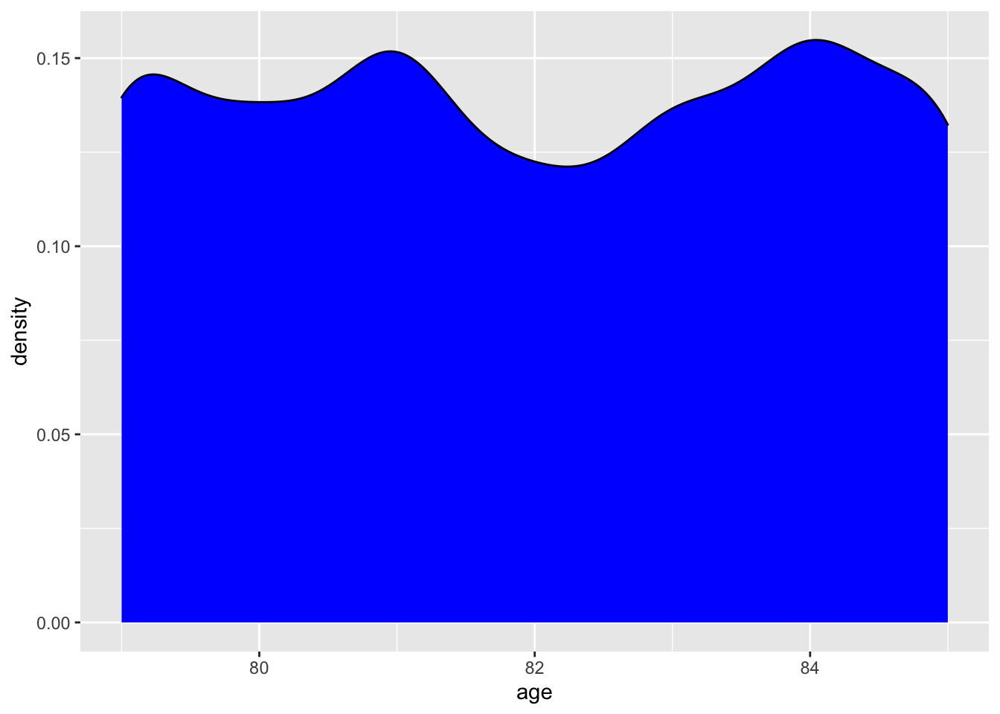
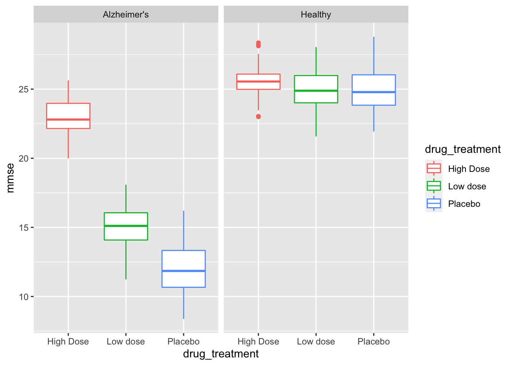
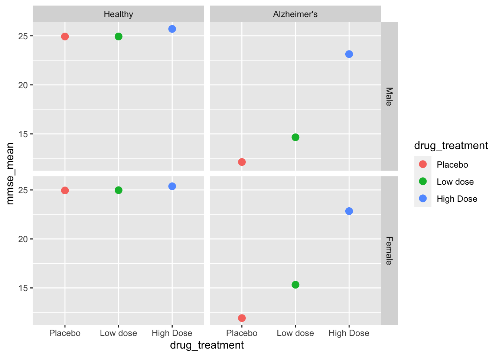

Introduction
After a great discussion started by Jesse Maegan (@kiersi) on Twitter, I decided to post a workthrough of some (fake) experimental treatment data. These data correspond to a new (fake) research drug called AD-x37, a theoretical drug that has been shown to have beneficial outcomes on cognitive decline in mouse models of Alzheimer’s disease. In the current experiment we will be statistically testing whether the drug was effective in reducing cognitive impairment in dementia patients. See the data HERE.
We will be using MMSE (mini-mental status exam) scores to assess the degree of cognitive impairment. In a real clinical trial, many other variables would be recorded, but for the sake of a straightforward but multi-variate example we will stick to just MMSE.

We will be working through loading, plotting, analyzing, and saving the outputs of our analysis through the tidyverse, an “opinionated collection of R packages” designed for data analysis. We will limit dependence to two packages: tidyverse and broomwhile using base R for the rest. These two packages dramatically improve the data analysis workflow in my opinion. While other stats-heavy packages provide additional statistical testing, base R has a decent ability to perform statistical analyses out of the box. I will use knitr::kable to generate some html tables for a markdown document, but it is not necessary for the workflow.
Additionally, I will be uploading the Excel Sheet used in this example, so that you can re-create the workflow on your own. You can simply copy-paste the code seen here and it will run in R. If you would rather see the entire workflow in an R-Markdown document, please see here. R Markdown is a document created inside R that allows you to write code, execute it inline, and write comments/notes as you go. You could think of it like being able to write R code inside a basic Word document (but it can do a lot more than that!).
Although you may not be interested in the dataset I have provided, this hopefully provides a clear workflow for you to swap in your data of interest and accomplish a basic analysis!
Load the tidyverse, broom, and knitr
Using the library function we will load the tidyverse. If you have never installed it before you can also use the install.packages("tidyverse") call to install it for the first time. This package includes ggplot2 (graphs), dplyr/tidyr (summary statistics, data manipulation), and readxl (reading excel files) as well as the pipe %>%which will make our code much more readable! We will also load the broom package to tidy up some of our statistical outputs. Lastly we will load knitr for making nice html tables via knitr::kable, but not necessary for simply saving the outputs to Excel.
This will output some message about the packages being loaded and any conflicts of function calls.
Loading the data
While I am calling readxl::read_xlsx you could also simply use read_xlsx, but in the interest of transparency, I will be using the full call to begin. The concept of calling a function with the use of :: is important as some packages have conflicts in functions, for example multiple packages include the function select and summarize. As such, we can clarify from which package we want R to call our function from, so package::function ! To read more about the concept of “namespace” when calling functions, please look here.
readxl is unfortunately a funny case, as installing the tidyverse installs readxl, but readxl is not loaded when loading the tidyverse via a library call. As such we must either load readxl like any other package or call both the package and the name as in readxl::read_xlsx. readxl allows us to read .xls, .xlsx files into R. Alternatively, you could convert your Excel sheet into .csv, which can be read by read_csv(). By using the glimpse function from dplyr we can see how the variables were imported, as well as the first few rows.
Rows: 600
Columns: 5
$ age <dbl> 80, 85, 82, 80, 83, 79, 82, 79, 80, 79, 80, 79, 81, 83,…
$ sex <dbl> 0, 0, 0, 0, 0, 0, 0, 0, 1, 0, 0, 1, 0, 1, 1, 0, 1, 0, 0…
$ health_status <chr> "Healthy", "Healthy", "Healthy", "Healthy", "Healthy", …
$ drug_treatment <chr> "Placebo", "Placebo", "Placebo", "Placebo", "Placebo", …
$ mmse <dbl> 24.78988, 24.88192, 25.10903, 24.92636, 23.38845, 24.11…We can collect some information about the dataset now. Namely, we have our 3 categorical/factor variables: sex, health_status, and drug_treatment and 1 dependent variable (DV): mmse. We also have age, but importantly it is recorded as a discrete number instead of as a factor (eg as 85 years, instead of old). Thus we can look at age, but we will not use it as a factor in our ANOVA.
Checking the data distribution
We will use our first ggplot2call to create a graph showing the distribution of age. To break down what we are doing, we need to call ggplot, tell it what data to use, and use the aes or aesthetic call to assign the x coordinate. We then add a + which tells ggplot to include the next line of code. The geom_density tells R that we want to make create a density distribution layer and we want to fillit with a blue color! For more info about ggplot2 please go HERE or here.

The graph shows us that age really only goes from 79–85 years, and that there is really not any age over or underrepresented. We can confirm the age ranges by a dplyr::summarize call or by calling range in base R. As a slight aside, we can now talk about using the pipe or %>%. The pipe passes the results or data from the left of it to the right. For more info about the pipe, please see here.
We can read the following code as take raw_df and then summarize it by taking the min and max of the age variable. Now because we started with raw_df R understands we want to take the column age from this dataframe.
# A tibble: 1 × 2
min max
<dbl> <dbl>
1 79 85Alternatively we could use the base R range function, which requires the use of $ . The dollar sign indicates that R should use the age column from raw_df. Both of these functions give us the same results, the minimum number and maximum number.
[1] 79 85For more information about using these two syntaxes look here or for cheat sheets look here.
What about the experimental variables levels?
Now while I am very aware of the variables in this dataframe, you might not be without exploring it! To quickly determine drug_treatment groups, health_status groups and how they interact we can do a table call. By calling it on both drug_treatment and health_status, we get a nice table breaking down how many rows are in each of the variable groups.
table(raw_df$drug_treatment, raw_df$health_status)
Alzheimer's Healthy
High Dose 100 100
Low dose 100 100
Placebo 100 100Alternatively we can do the same thing in dplyr with the following code.
# A tibble: 6 × 3
# Groups: drug_treatment, health_status [6]
drug_treatment health_status n
<chr> <chr> <int>
1 High Dose Alzheimer's 100
2 High Dose Healthy 100
3 Low dose Alzheimer's 100
4 Low dose Healthy 100
5 Placebo Alzheimer's 100
6 Placebo Healthy 100Now we know the levels of our variables of interest, and that there are 100 patients per overall treatment group!
Data exploration of dependent variable
Before running our summary statistics we can actually visualize the range, central tendency and quartiles via a geom_boxplot call.
ggplot(data = raw_df, # add the data
aes(x = drug_treatment, y = mmse, # set x, y coordinates
color = drug_treatment)) + # color by treatment
geom_boxplot() +
facet_grid(~health_status) # create panes base on health status
We have split the data into separate graph facets (or panes) for healthy and Alzheimer’s patients, as well as into groups within each facet by drug treatment. This graph tells us a few things of interest for later. It definitely looks like we have an effect with our (fake) awesome drug! Let’s explore that with descriptive statistics.
While this is an exploratory graph and we don’t necessarily want to “tweak” it to perfection, we can take note that our drug treatment should be ordered Placebo < Low dose < High Dose and we should have Healthy patients presented first, and Alzheimer’s patients second. This is something we can fix in our next section!
Summary Statistics
We are looking to generate the mean and standard error for mmse scores, this is useful as a measure of central tendency, and for creating our final publication graphs. We have our categorical variables of sex, drug treatment, and health status. However going back to our glimpse call from earlier, we can see that the data is not ‘coded’ properly. Namely, sex is a dbl (number), without a descriptive name, and health_status/drug_treatment are chr (characters)! These need to be converted into factors!
Rows: 600
Columns: 5
$ age <dbl> 80, 85, 82, 80, 83, 79, 82, 79, 80, 79, 80, 79, 81, 83,…
$ sex <dbl> 0, 0, 0, 0, 0, 0, 0, 0, 1, 0, 0, 1, 0, 1, 1, 0, 1, 0, 0…
$ health_status <chr> "Healthy", "Healthy", "Healthy", "Healthy", "Healthy", …
$ drug_treatment <chr> "Placebo", "Placebo", "Placebo", "Placebo", "Placebo", …
$ mmse <dbl> 24.78988, 24.88192, 25.10903, 24.92636, 23.38845, 24.11…We can use the dplyr::mutate function to tell R we want to change (mutate) the rows within a variable of interest. So we will take the data in the sex, drug_treatment, and health_status columns and convert them from either just numbers or characters into a factor variable! dplyr::mutate can also perform math, and many other interesting things. For more information please see here.
We will use the mutate function and the base R factor function to convert our variables into the proper factors, and give them labels (for sex) or reorder the levels of the factors.
We need to be REALLY careful to type the labels EXACTLY as they appear in the column or it will replace those misspelled with a NA. For example, did you notice that High Dose has a capital “D” while Low dose has a lower case “d”?
As powerful as R is, it needs explicit and accurate code input to accomplish the end goals. As such, if we had typed “High dose” it would give an NA, while “High Dose” outputs correctly. We now see age and mmse as dbl (numerics) and sex, health_status, and drug_treatment as factors.
Rows: 600
Columns: 5
$ age <dbl> 80, 85, 82, 80, 83, 79, 82, 79, 80, 79, 80, 79, 81, 83,…
$ sex <fct> Male, Male, Male, Male, Male, Male, Male, Male, Female,…
$ health_status <fct> Healthy, Healthy, Healthy, Healthy, Healthy, Healthy, H…
$ drug_treatment <fct> Placebo, Placebo, Placebo, Placebo, Placebo, Placebo, P…
$ mmse <dbl> 24.78988, 24.88192, 25.10903, 24.92636, 23.38845, 24.11…Now that everything is coded properly, we can calculate our mean and standard error (se = standard deviation/square root of number of samples)! We will use the dplyr::group_by to tell R which factors we want to… group by! Then we will create named summaries by first calling dplyr::summarize and then specifying which summaries we want with mmse_mean and mmse_seand the number of samples n(). Lastly we will ungroup, which removes the group_by code from the dataframe.
sum_df <- sum_df %>%
group_by(sex, health_status, drug_treatment) %>%
summarize(mmse_mean = mean(mmse),
mmse_se = sd(mmse)/sqrt(n()),
n_samples = n()) %>%
ungroup() # ungrouping variable is a good habit to prevent errors`summarise()` has grouped output by 'sex', 'health_status'. You can override
using the `.groups` argument.Now we have a nicely formatted dataframe that can be saved to Excel, or used in graphing. We need to indicate what data we are writing (sum_df) and what we want the resulting file to be named (“adx37_sum_stats.csv”).
# code to save the table into a .csv Excel file
write.csv(sum_df, "adx37_sum_stats.csv")Summary graph
By calling a ggplot function we can generate a preliminary summary graph.
ggplot(data = sum_df, # add the data
aes(x = drug_treatment, #set x, y coordinates
y = mmse_mean,
group = drug_treatment, # group by treatment
color = drug_treatment)) + # color by treatment
geom_point(size = 3) +
facet_grid(sex~health_status) # create facets by sex and status
We can now see that the graph is properly sorted by drug treatment and by health status. We still have some work to do on the final graph, but let’s move on to the ANOVAs first!
The ANOVA finally!
We will be prepping a dataframe for analysis via ANOVA. We need to again make sure we have our factors as factors via mutate, and in the correct order. This is necessary for the ANOVA/post-hoc testing to work, and to make the post-hocs and the ANOVA outputs easier to read.
Rows: 600
Columns: 5
$ age <dbl> 80, 85, 82, 80, 83, 79, 82, 79, 80, 79, 80, 79, 81, 83,…
$ sex <fct> Male, Male, Male, Male, Male, Male, Male, Male, Female,…
$ health_status <fct> Healthy, Healthy, Healthy, Healthy, Healthy, Healthy, H…
$ drug_treatment <fct> Placebo, Placebo, Placebo, Placebo, Placebo, Placebo, P…
$ mmse <dbl> 24.78988, 24.88192, 25.10903, 24.92636, 23.38845, 24.11…That gets our dataframe into working status!
Calling the ANOVA is a done via the aov function. The basic syntax is shown via pseudocode below. We put the dependent variable first (mmse in our case), then a ~ then the independent variable we want to test. Lastly we specify what data to use.
We can add our real data set via the code below, but because we have 3 independent variables we have a choice to make. We can simply look for main effects by adding a + in between each of our variables, or we can look for both main effects and interactions by adding a * between each variable. Make sure to not replace the + or * with commas, as that will lead to an error.
By assigning the ANOVA to the ad_aov object, we can then call summary on it to look at the results of the ANOVA.
Df Sum Sq Mean Sq F value Pr(>F)
sex 1 0 0 0.047 0.828
drug_treatment 2 3601 1801 909.213 <2e-16 ***
health_status 1 10789 10789 5447.953 <2e-16 ***
sex:drug_treatment 2 8 4 2.070 0.127
sex:health_status 1 5 5 2.448 0.118
drug_treatment:health_status 2 2842 1421 717.584 <2e-16 ***
sex:drug_treatment:health_status 2 5 2 1.213 0.298
Residuals 588 1164 2
---
Signif. codes: 0 '***' 0.001 '**' 0.01 '*' 0.05 '.' 0.1 ' ' 1The summary gives us the degrees of freedom, sum of squares, mean squares, F value, and the p value. I added a bold emphasis on the <2e -16, these p values are so small that R switches to scientific notation. So we see significant main effects of drug treatment, health status, and an interaction of drug treatment by health status. We can interpret that Alzheimer’s patients had different cognitive scores than healthy, and that drug treatment had an effect on cognitive scores. Importantly, sex was not a significant factor, as p = 0.828. Variables being scored as significant or non-significant can both be important!
We can also use broom::tidy to clean up the results of the ANOVA and put them into a dataframe. This is useful for storage, or for automation of some analysis for future ANOVAs.
However, we don’t know the direction of differences, or where exactly the differences were Was it just the high dose? Low dose? Both? We need follow-up post hoc tests to determine these answers!
Post-hocs > Post-docs (academia jokes < dad jokes)
We have multiple ways of looking at post-hocs. I will show two in this section.
For the pairwise, we need to use the $ to select columns from each of the dataframes and look at the interaction via :. Our first pairwise has NO correction for multiple comparisons, and is comparable to a unprotected Fisher’s-LSD post-hoc. This is not stringent at all, and given the amount of comparisons we have it is advisable to either move forward with a p.adjusting Bonferonni correction (change p.adj = “none” to p.adj = “bonf”) or the Tukey post-hoc test seen in the next example. You can see that this method is a little jumbled to read due to the dataset$column method and the need for : in between each interaction. We can read this as we want pairwise.t.test for the interaction of sex by drug_treatment by health_status, which gives us every iteration of these factors against the other.
Additionally, we need to extract the matrix of p values and save to an Excel file for future use.
We do this by simply wrapping our ad_last posthoc with broom::tidy.
# A tibble: 6 × 3
group1 group2 p.value
<chr> <chr> <dbl>
1 Male:Placebo:Alzheimer's Male:Placebo:Healthy 1.25e-199
2 Male:Low dose:Healthy Male:Placebo:Healthy 9.84e- 1
3 Male:Low dose:Healthy Male:Placebo:Alzheimer's 8.68e-198
4 Male:Low dose:Alzheimer's Male:Placebo:Healthy 8.01e-157
5 Male:Low dose:Alzheimer's Male:Placebo:Alzheimer's 1.37e- 18
6 Male:Low dose:Alzheimer's Male:Low dose:Healthy 3.23e-155The Tukey post-hoc is a little cleaner to call, and is preferable to the unadjusted pairwise t-test. Notice we also are already wrapping the Tukey results in broom::tidy to save as a tidy dataframe! The TukeyHSD call incorporates the results of the ANOVA call, and is preferable to the previous method.
The following code can be read as we want a Tukey post-hoc test on the results of our ad_aov ANOVA across the interactions of sex by drug_treatment by health_status. Notice the quotation marks around ‘sex:drug_treatment:health_status’ and the : in between each variable. These are necessary to tell R how we want the Tukey to be run! Once this is done, R then runs tidy on it to make it into a nice dataframe similar to our previous pairwise test. We can then save the results to Excel!
| term | contrast | null.value | estimate | conf.low | conf.high | adj.p.value |
|---|---|---|---|---|---|---|
| sex:drug_treatment:health_status | Female:Placebo:Healthy-Male:Placebo:Healthy | 0 | 0.0111117 | -0.9140819 | 0.9363052 | 1.0000000 |
| sex:drug_treatment:health_status | Male:Low dose:Healthy-Male:Placebo:Healthy | 0 | 0.0056692 | -0.9000907 | 0.9114291 | 1.0000000 |
| sex:drug_treatment:health_status | Female:Low dose:Healthy-Male:Placebo:Healthy | 0 | 0.0403184 | -0.8748132 | 0.9554500 | 1.0000000 |
| sex:drug_treatment:health_status | Male:High Dose:Healthy-Male:Placebo:Healthy | 0 | 0.7762410 | -0.1295189 | 1.6820009 | 0.1775310 |
| sex:drug_treatment:health_status | Female:High Dose:Healthy-Male:Placebo:Healthy | 0 | 0.4360609 | -0.4790707 | 1.3511925 | 0.9213646 |
| sex:drug_treatment:health_status | Male:Placebo:Alzheimer’s-Male:Placebo:Healthy | 0 | -12.8040144 | -13.7053250 | -11.9027038 | 0.0000000 |
Publication Graph
Now that we have generated our ANOVAs and post-hocs, and saved them to Excel for storage, we can start making a publication-grade graph!
ggplot2 graphs allow for extreme customization, some of the additions I make to this graph are a personal choice, and as such I would recommend discussion with a mentor or experienced member in your field. Bar graphs are ubiquitous in my field, and while I think plotting as a boxplot would tell more about the data, I will initially start with a bar graph.
Our goal is to plot the means, standard errors, and indicate significance where it occurs. Rather than relying on a package to label significance, I will be handmaking a custom dataframe with the tribble function. There are alternatives to doing it this way, but I can easily control what happens with this method, and it is explicitly apparent what the dataframe contains. The basics of tribble are shown in the below example. We assign columns with the ~ and then explicitly write out what we want in each row of the columns.
# A tibble: 3 × 2
colA colB
<chr> <dbl>
1 a 1
2 b 2
3 c 3And here is our actual code for making the custom dataframe.
Now that we have this data frame, we can use it in a geom_text call to label our bars with significance labels as indicated by a *.
Here is what the final publication graph looks like in ggplot2 code. You’ll notice I assigned it to g1 rather than just calling it directly. This means I will have to call g1 to view the graph, but I can save it now! To read what we are doing, I am calling the initial ggplot call as before, but adding an error bar layer, a bar graph layer, separating into panes for sex and health_status, switching to an alternate appearance (theme_bw), setting the colors manually, making minor adjustments via theme, adding the * for indication of significance, and lastly altering the axis labels while adding a figure caption.
Saving is done via the ggsave function, where we will need to name the resulting file with surrounding “ “, tell R which ggplot object we want (g1), and indicate the size via height, width, and units. Don’t forget to save the graph with a dpi call to make it nice and crisp!
And the final graph!
I think it would be a disservice to say you can learn ggplot by simply recreating my example. As such, I would like to point you in the direction of the R for Data Science textbook, as well as the Modern Dive ebook. These free ebooks have a tremendous amount of information that may be beyond what you need to accomplish today, but would serve you well in your future endeavors. Their chapters on data visualization are very helpful for getting started in R plotting!
Thank you
If you have made it this far, good for you! I hope this was helpful and if you have any questions, I would recommend reaching out on Twitter via the #rstats or #r4ds hashtag, or you can find me @thomas_mock on twitter.
Additionally, Jesse Maegan has a R for Data Science Slack channel where you can learn and ask questions as you work through the R for Data Science text, read all about it here!. R Studio (caretakers of the Tidyverse) hosts their own forums.
─ Session info ───────────────────────────────────────────────────────────────
setting value
version R version 4.2.0 (2022-04-22)
os macOS Monterey 12.2.1
system aarch64, darwin20
ui X11
language (EN)
collate en_US.UTF-8
ctype en_US.UTF-8
tz America/Chicago
date 2022-06-17
pandoc 2.18 @ /Applications/RStudio.app/Contents/MacOS/quarto/bin/tools/ (via rmarkdown)
quarto 0.9.577 @ /usr/local/bin/quarto
─ Packages ───────────────────────────────────────────────────────────────────
package * version date (UTC) lib source
broom * 0.8.0 2022-04-13 [1] CRAN (R 4.2.0)
dplyr * 1.0.9 2022-04-28 [1] CRAN (R 4.2.0)
forcats * 0.5.1 2021-01-27 [1] CRAN (R 4.2.0)
ggplot2 * 3.3.6 2022-05-03 [1] CRAN (R 4.2.0)
here * 1.0.1 2020-12-13 [1] CRAN (R 4.2.0)
knitr * 1.38.3 2022-04-26 [1] Github (yihui/knitr@87e5d8e)
purrr * 0.3.4 2020-04-17 [1] CRAN (R 4.2.0)
readr * 2.1.2 2022-01-30 [1] CRAN (R 4.2.0)
readxl * 1.4.0 2022-03-28 [1] CRAN (R 4.2.0)
sessioninfo * 1.2.2 2021-12-06 [1] CRAN (R 4.2.0)
stringr * 1.4.0 2019-02-10 [1] CRAN (R 4.2.0)
tibble * 3.1.7 2022-05-03 [1] CRAN (R 4.2.0)
tidyr * 1.2.0 2022-02-01 [1] CRAN (R 4.2.0)
tidyverse * 1.3.1 2021-04-15 [1] CRAN (R 4.2.0)
[1] /Library/Frameworks/R.framework/Versions/4.2-arm64/Resources/library
──────────────────────────────────────────────────────────────────────────────